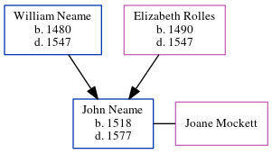

John Neame 1518 - 1577
[ Home ] | [ Calendar ] | [ Surnames Index ] | [ Errors ] | [ Family History ]The child of William Neame and Elizabeth Rolles, John Neame, the thirteen times great-uncle of Nigel Horne, was born in Woodnesborough, Kent, England in 1518. He was married to Joane Mockett.
He died in 1577 in Woodnesborough1 and was buried there on 10 Apr 15772.
Parents
- William was born in 1480
- Elizabeth was born in 1490
Citations
- Kent, England, Tyler Index to Parish Registers, 1538-1874 Online publication - Provo, UT, USA: Ancestry.com Operations, Inc., 2010. This collection was indexed by Ancestry World Archives Project contributors.Original data - Frank Watt Tyler. The Tyler Collection. Canterbury, Kent, England: The Institute of Herald
- Other
Family Tree
Map
Generated by ged2site. Last updated on Jul 3, 2024
Known Issues
Birth date (1518) has no citations
Unhandled event type: Granted Arms